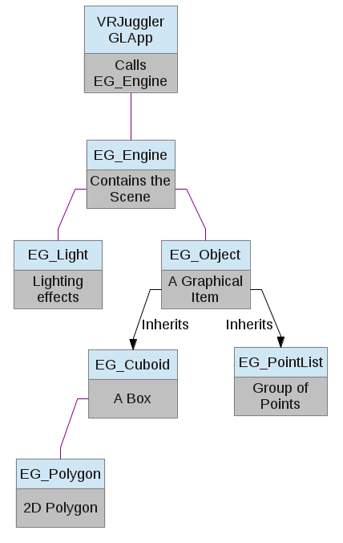

EG_Engine contains all of the objects and lights to be drawn in the graphics scene. It's built to interface well with VRJuggler's GLApp class, which has event handlers that can be hooked up to different EG_Engine functions.
An OpenGL light. New lights should never be created; every available light is already contained within EG_Engine. They can be modified, turned on or off, and moved around.
EG_Object is an abstract class that is inherited by graphical objects we'd like to draw in EG_Engine. It keeps track of the object's color, position, rotation, and lighting.
These are simple 3D shapes that can be added to the scene in EG_Engine. They inherit from EG_Object.
A 3D model loaded from file, with support for textures. EG_Model can be added to the scene in EG_Engine.
Allows reading and writing values to configuration files.
Represents a 32-bit RGBA color.
A simple cross-platform mutex. VRJuggler draws its OpenGL contexts in different threads, and we sometimes need to perform cross-thread synchronization.
A polygon that makes up part of a graphical object. EG_Polygon is used internally by EG_Cuboid, and can be used to make your own custom objects.
A string class that we can export through a DLL interface.
Obtains the current system time, and keeps track of time elapsed.
EG_Utils is a collection of functions and objects that are used by multiple classes within EbonGL. The first thing you should do in any EbonGL program is call the initEbonGL function.